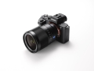

器材库 > 35mm画幅可换镜头数码相机 > 索尼A7SII

规格总览
产品类型
35mm画幅可换镜头数码相机
发布日期
2015-09-11
厂家推荐价格
17,999.00 （人民币）
影像规格
影像传感器
CMOS
影像传感器尺寸
35mm全画幅
有效像素
1220万
影像处理器
高速BIONZ X
静态图像格式
RAW+JPEG
短片尺寸
4K：100Mbps； 全高清120fps：100Mpbs；全高清：50Mbps）
短片格式
XAVC S
防抖系统
最高可提供4.5级*2的抖动补偿效果，并且可用于视频拍摄
镜头和对焦
镜头卡口
Sony E
对焦系统类型
反差自动对焦系统
对焦点
169点
AF辅助灯
有
手动对焦
支持
曝光控制
连拍
5fps
闪光灯
内置闪光灯
无
文件输入/输出
存储卡
SDXC
该产品暂无存档的网友点评
产品图 / 样片
评测 / 相关文章
- 详细内容 （存档）
相关文章
- ［资讯］索尼发布A7SII拍摄的外太空4K视频 （原站已下线）
- ［资讯］索尼微单迎来集体固件升级 （存档）
- ［试用］当大法A7SII 遇上老蛙12/2.8 （原站已下线）
- ［行情］五一出游怎能少Ta 索尼微单相机推荐 （存档）
- ［试用］索尼微单拍摄视频经验总结 （原站已下线）
- ［资讯］追光逐影 索尼A7sII航拍极光 （原站已下线）
- ［资讯］索尼斩获5项2016 EISA大奖 （存档）
- ［资讯］EISA公布2016-2017年度器材奖项 （存档）
- ［资讯］XAVCS下支持SDHC A7RII和A7SII固件更新 （原站已下线）
- ［资讯］小身材也有大能量 索尼微单选购全攻略 （存档）
- ［资讯］新品索尼全画幅微单A7SII发布 （存档）
- ［试用］为视频而生 索尼全画幅微单A7SII评测 （原站已下线）